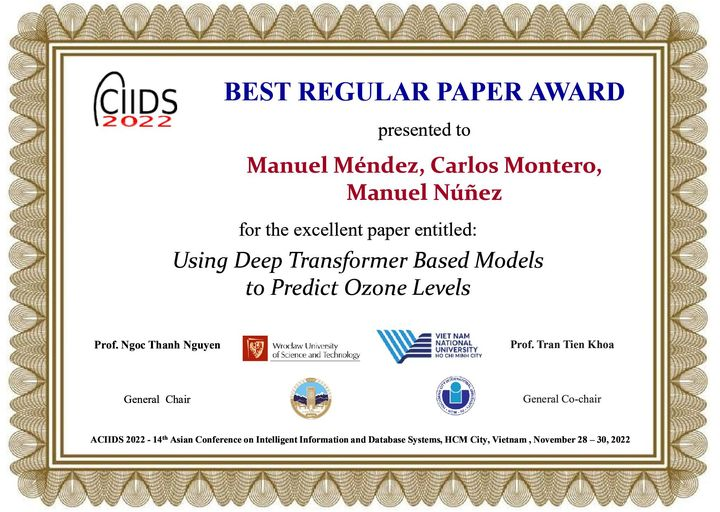

DOCTORAL DISTINCTION · 2023–2024
Premio Extraordinario de Doctorado
Faculty of Informatics, Universidad Complutense de Madrid.
06 / RECOGNITION
Recognition for doctoral research and conference research contributions.
DOCTORAL DISTINCTION · 2023–2024
Faculty of Informatics, Universidad Complutense de Madrid.

CONFERENCE AWARD · 2022
ACIIDS 2022, for “Using Deep Transformer Based Models to Predict Ozone Levels”.